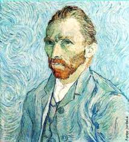
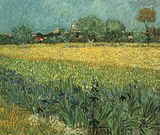
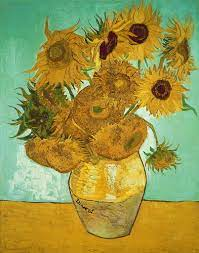

Bem vindo ao mundo artístico de Van Gogh.
Aqui você irá descobrir um pouco sobre sua definição de vida e obras artísticas.

Vicent Van Gogh foi um importante pintor holândes, tendo sido um dos principais representantes do pós-impressionismo.
Van Gogh morreu no anonimato, depois de uma vida cheia de tormentos que o levou ao isolamento e logo, ao suicídio.
Em 1880, Van Gogh foi para Bruxelas e, com o dinheiro que o irmão lhe mandou, ele estudou anatomia e perspectiva. Sabendo o que irá querer ser: pintor.
Em 1881, se muda para Haia, onde é acolhido pelo pintor Mauve. Ele pinta aquarelas, nas quais aparecem marinheiros, pescadores e camponeses. Pinta gente viva e critica os personagens da pintua clássica, "gente que não trabalha".
Escreve para o seu irmão: "Eu não quero pintar quadros, eu quero pintar a vida.
Em março de 1885, seu pai morreu repentinamente. Em abril do mesmo ano, Van Gogh pintou Os comedores de Batata.
Sobre essa obra, o artista disse: "Poderíamos dizer que se trata de uma verdadeira pintura de camponeses. Eu sei que é."

Em dois anos, Van Gogh pintou 200 quadros, entre eles o Autorretrato e Retrato de Pére Tanguy.

Em 1888, Van Gogh encontra-se em saúde precária e segue os conselhos de Toulouse-Lautrec, vai para o campoe e em fevereiro, pinta ao ar livre.
Nessa época, Van Gogh pinta suas obras mais importantes. Entre eles: Vista de Arles com Lírios, Girassóis e Quarto em Arles.
 
Van Gogh foi levado para o hospital Saint-Paul por doenças mentais. Depois de dez dias, vai para casa e pinta o Auto Retrato com a Orelha Cortada.
Em maio de 1889, ele vai para o hospital Saint-Rémy-de-Provance e transforma seu quarto. Van Gogh pintou paisagens, produziu mais de duzentos quadros e centenas de desenhos. Entre eles uma das suas obras mais conhecidas: A Noite Estrelada.
O jornal Mercúrio de França faz elogios ao pintor. Uma exposição é organizada, mas o artista só vende a tela
O artista foi para Auvers, sob os cuidados do Dr. Gachet, que o examinou e contou que a situção de Van Gogh era grave. Nesse período, Van Gogh pintou mai de 200 desenhos e 40 quadros, entre eles: Campo de Trigo com Corvos e A Igreja em Auvers.
"O resultado do pensamento não tem de ser o sentimento, mas a atividade."
Eu estou sempre fazendo aquilo que não sou capaz, numa tentativa de aprender como fazê-lo."
"Acredito cada vez mais que não se deve julgar o bom Deus por este mundo, pois foi um estudo dele que saiu errado."
Não tenho certeza de nada, mas a visão das estrelas me faz sonhar."
"Quando sinto uma terrível ncessidade de religião, saio à noite para pintar as estrelas."
"Se você perdeu dinheiro, perdeu pouco. Se perdeu a honra, perdeu muito. Se perdeu a coragem, perdeu tudo."
Ache belo tudo o que puder. A maioria das pessoas não acha belo o suficiente.
Grandes coisas não se fazem por impulso, mas pela junção de uma série de pequenas coisas."
A arte é consolar aqueles que são quebrados na vida."
Eu tenho a natureza, a arte e a poesia, e se isso não for o suficiente, o que é?